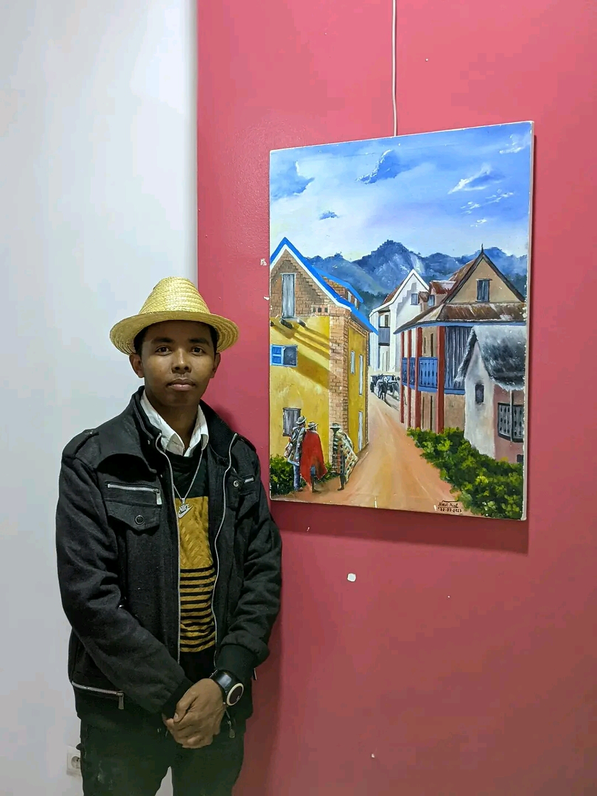
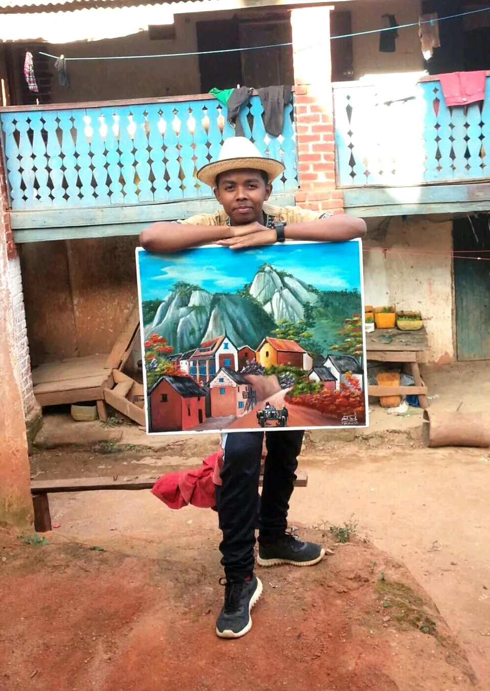

La peinture betsileo est une forme d'art traditionnel qui reflète la richesse culturelle et l'histoire du peuple betsileo. Les peintures betsileo sont souvent caractérisées par des couleurs vives et des motifs géométriques qui représentent la nature, les ancêtres et les croyances spirituelles.
Caracteristiques
Utilisation de symbole: Les peintures betsileo utilisent souvent des symboles pour représenter des concepts et des idées. Ces symboles peuvent être géométriques ou figuratifs.
Importance de la nature : La nature est un thème important dans la peinture betsileo. Les peintures peuvent représenter des éléments tels que les arbres, les fleurs et les animaux.
Richesse culturelle : La peinture betsileo est une expression de la richesse culturelle et de l'histoire du peuple betsileo.
Influence sur l'art moderne
Inspiration pour les artistes : La peinture betsileo peut être une source d'inspiration pour les artistes modernes qui cherchent à explorer leurs racines culturelles.
Fusion de styles : La peinture betsileo peut être combinée avec d'autres styles artistiques pour créer des oeuvres uniques et innovantes.



La peinture betsileo est une forme d'art traditionnel qui continue d'inspirer les artistes et les amateurs d'art aujourd'hui. Sa richesse culturelle et sa beauté visuelle en font une partie importante du patrimoine malgache.